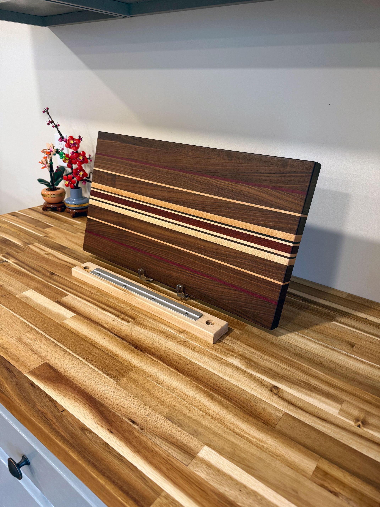
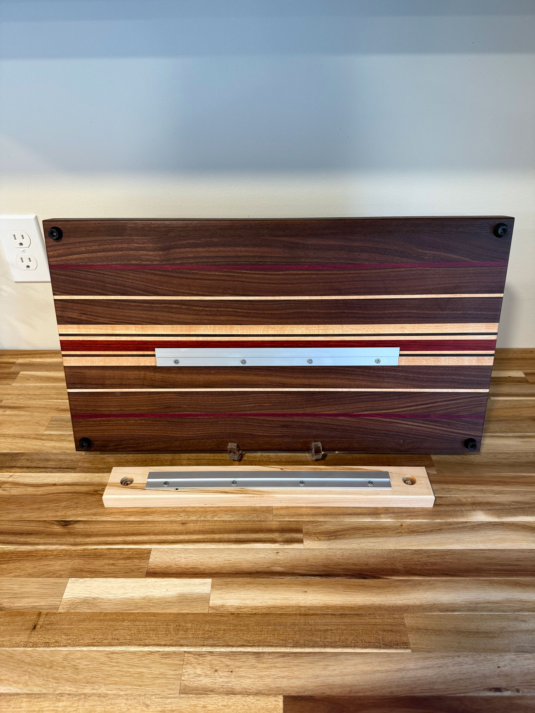
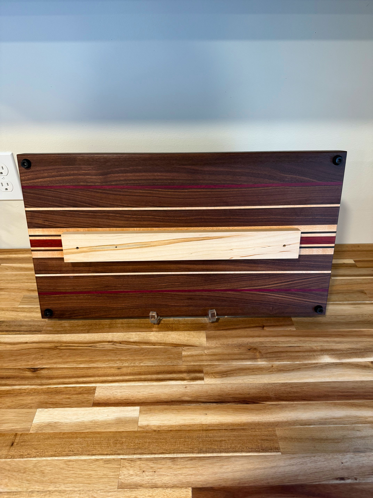
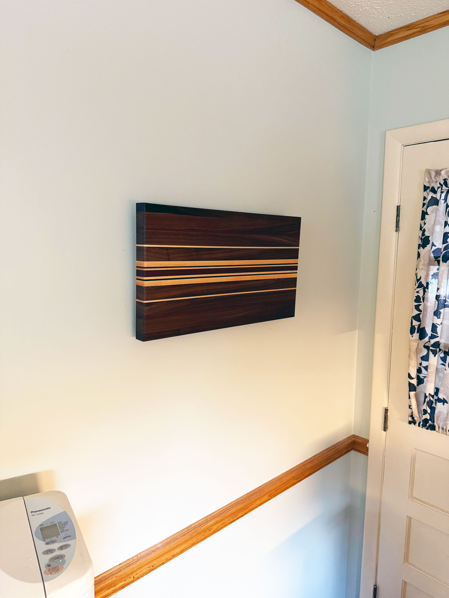
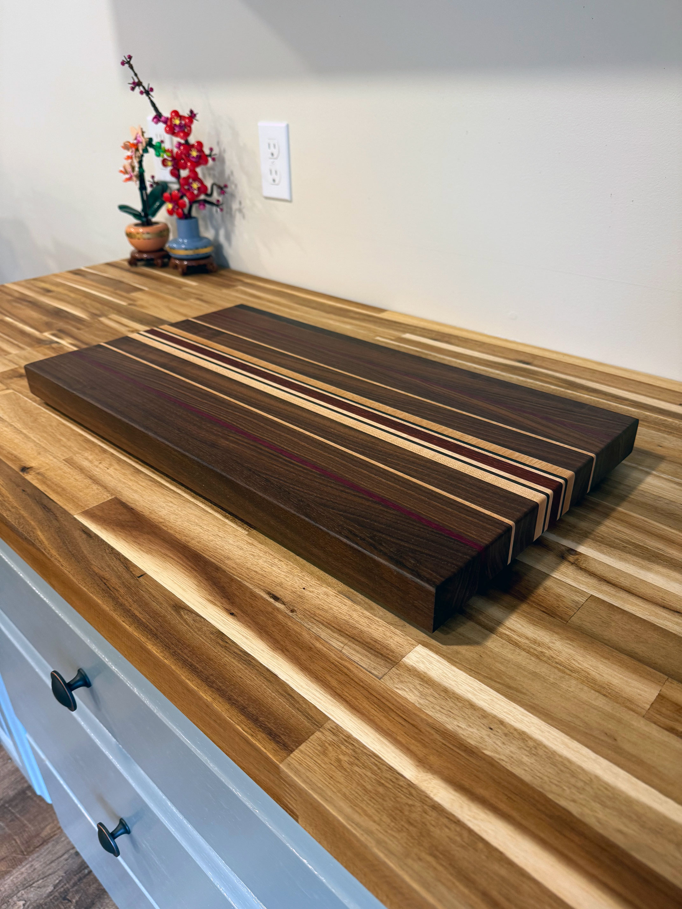

Eloise





Eloise
Cutting Board - 21"x12"x1.5"
$75
Elevate your kitchen with this one-of-a-kind handmade cutting board crafted from a striking mix of walnut, hard maple, padauk, and purple heart woods. The contrasting tones and natural beauty of the hardwoods make this both a functional cutting board and a display-worthy piece of art.
- Dimensions: 21" x 12" x 1.5"
- Woods: Walnut, Hard Maple, Padauk, Purple Heart
- Includes: French cleat + wall mount hardware so you can easily hang it as a statement piece when not in use.
- Edge grain construction for durability and style.
- Finished with food-safe oil for protection and long-lasting use.